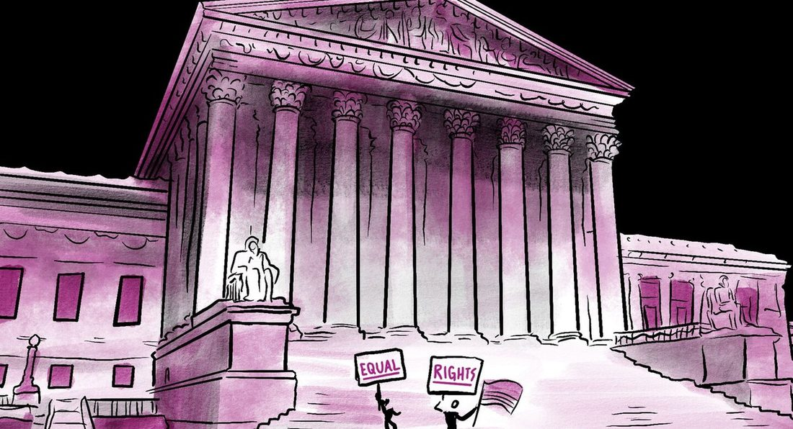
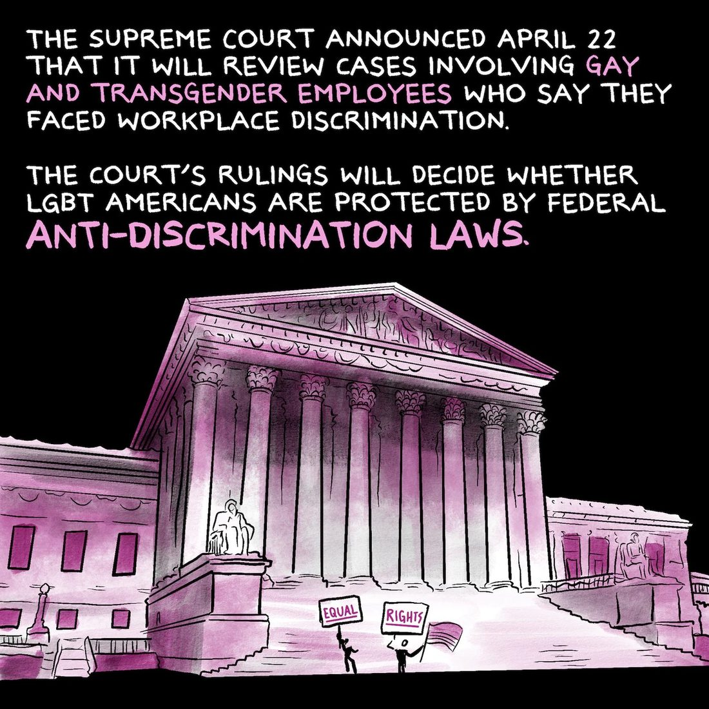
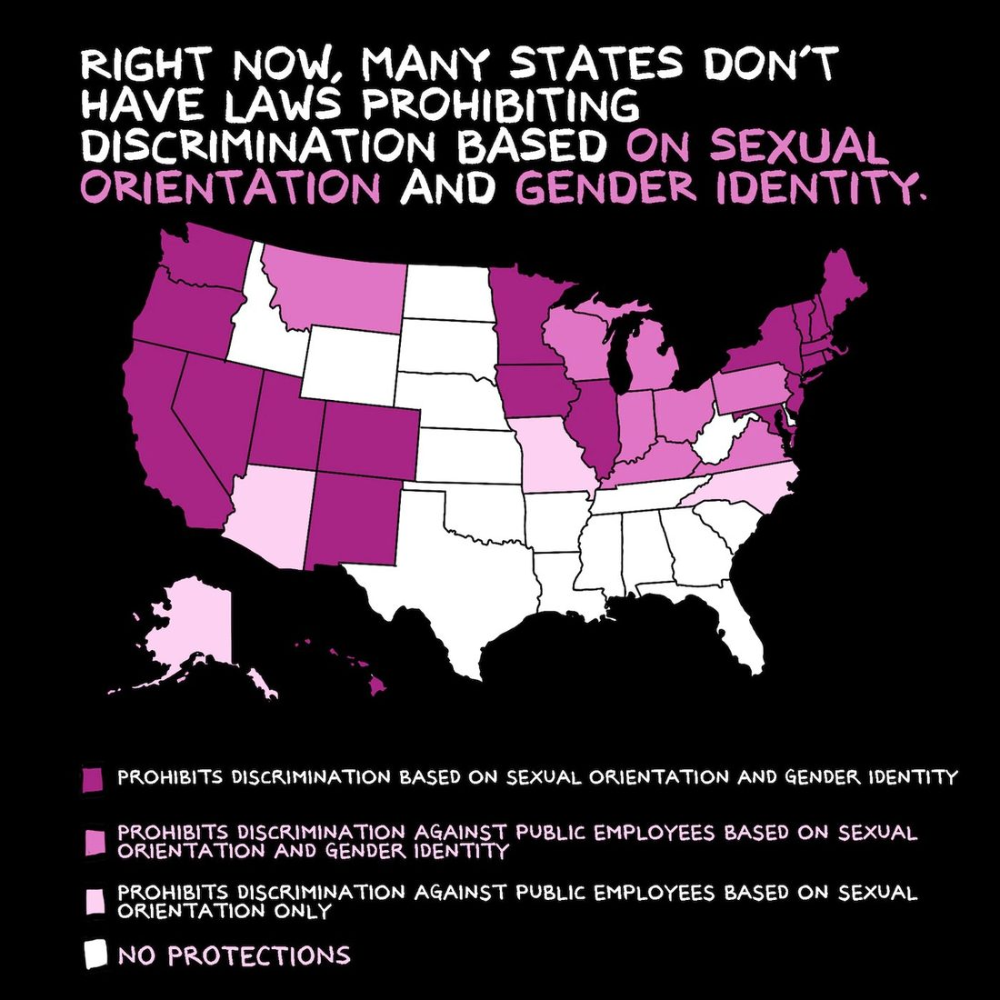
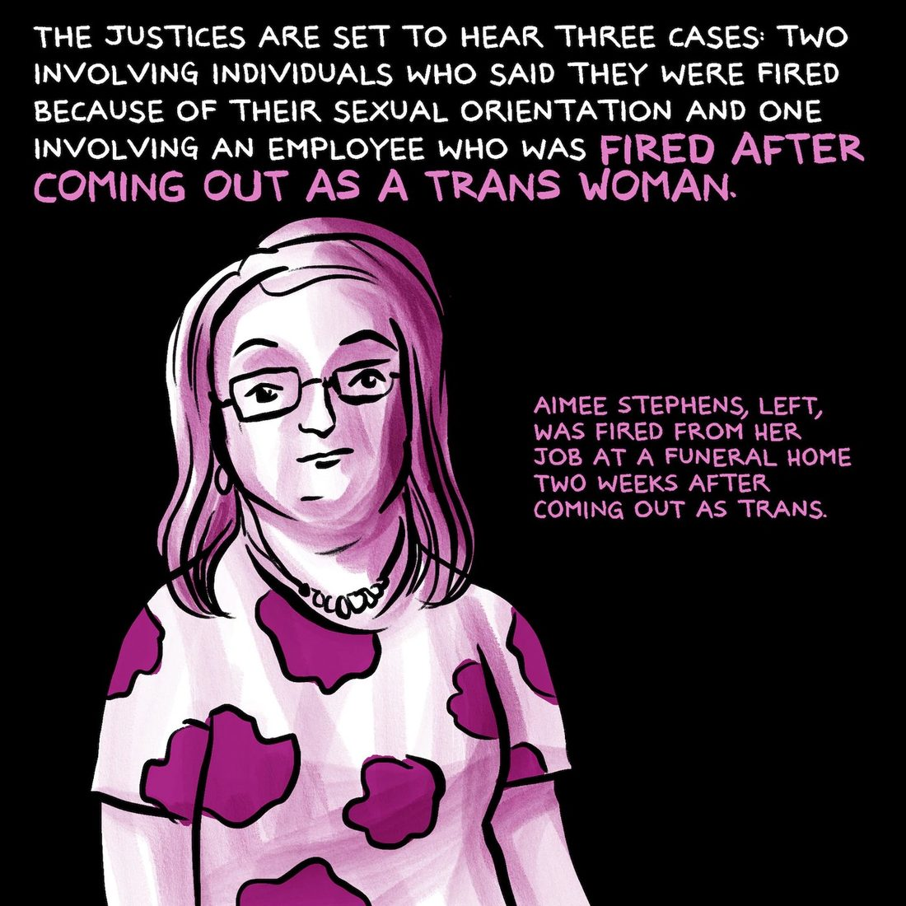
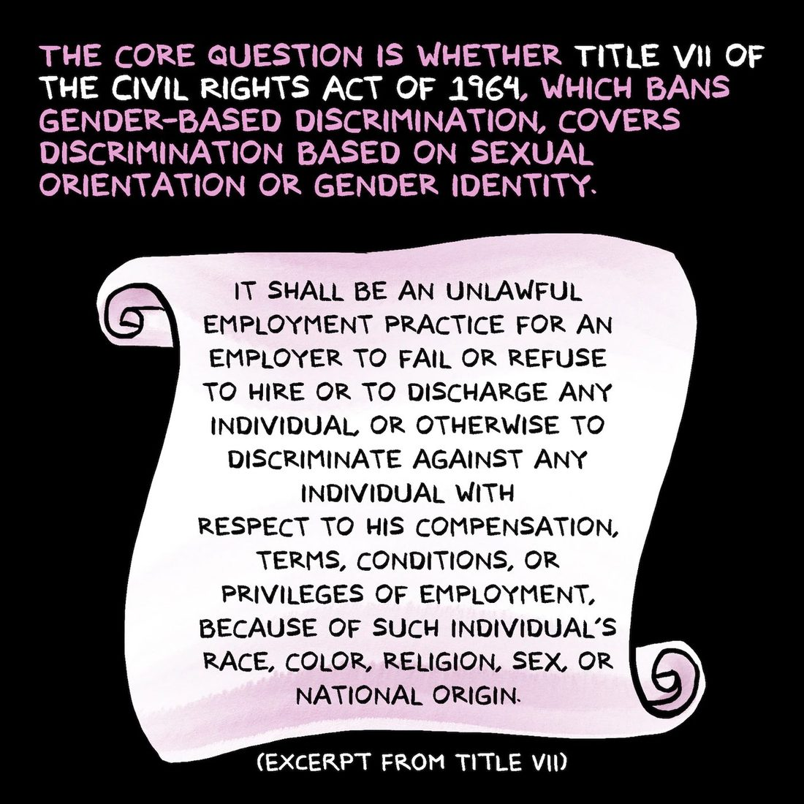
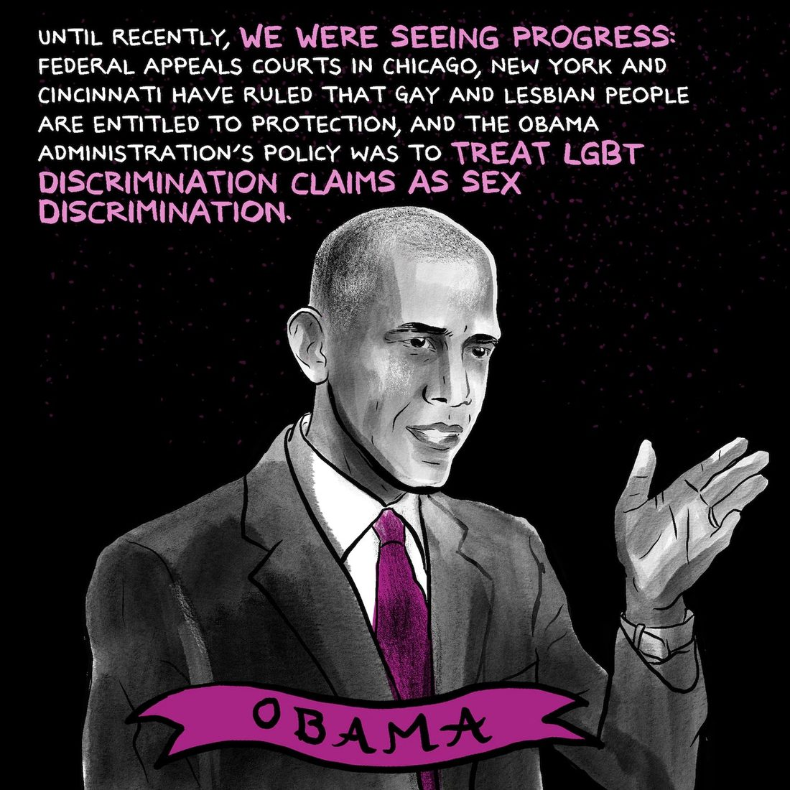
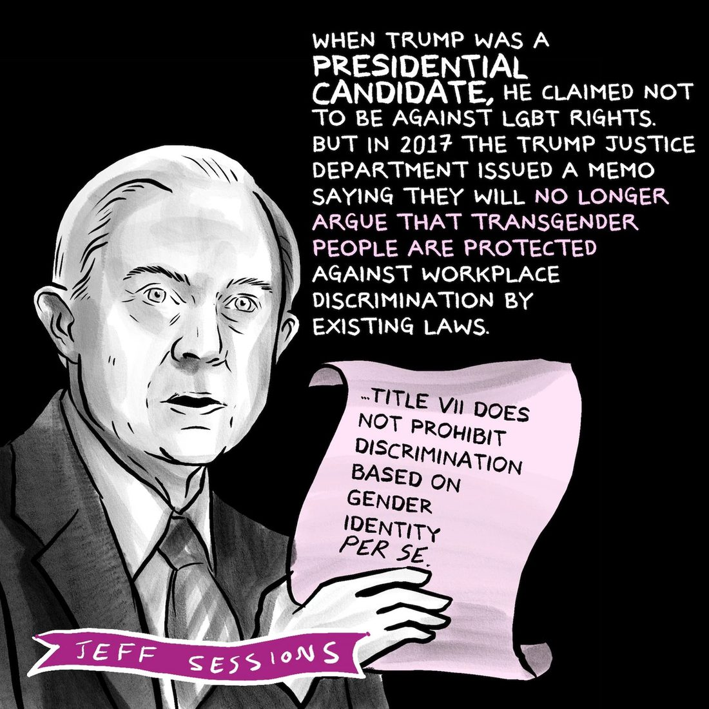
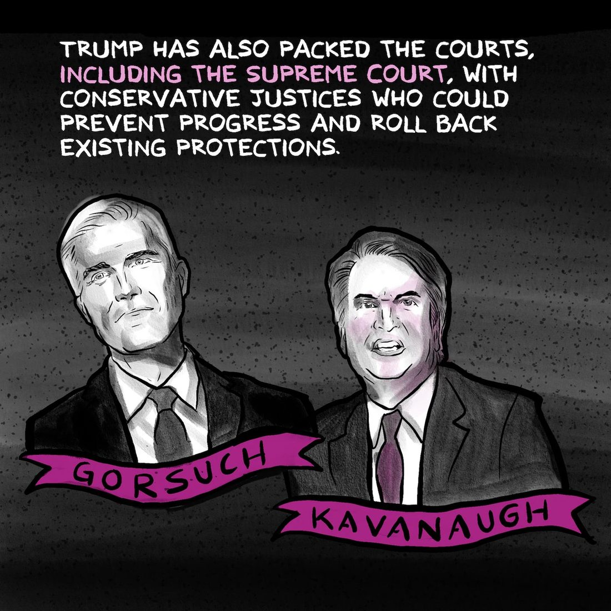
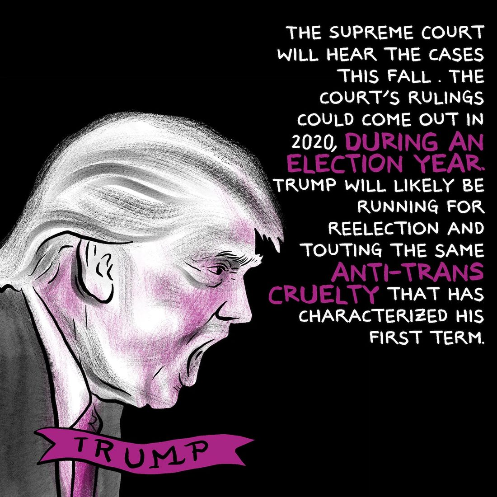
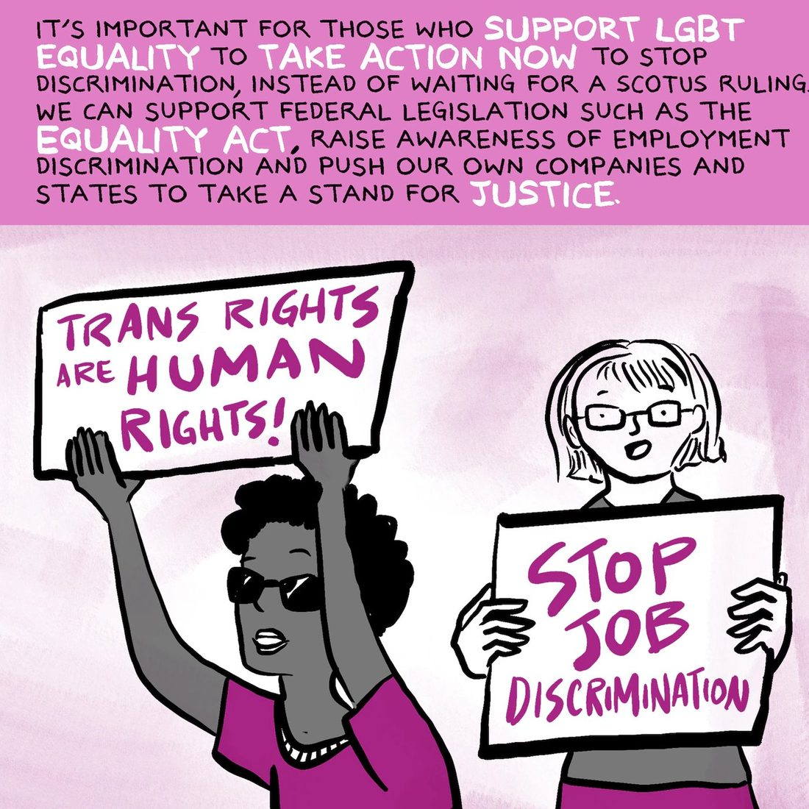

← back to comics journalism
the lily · 6 may 2019 · 10 panels
The Supreme Court will decide whether LGBT workers can be fired for who they are
An explainer on three employment discrimination cases, the state by state patchwork underneath them, and what the ruling could reach.










Originally published by The Lily. Republished here by the author, who holds the rights. Every panel carries a description for screen readers.
open to communications, content and editorial roles
Let’s talk.
If you have something complicated that has to land with people who are not paid to care, that is the work I want.